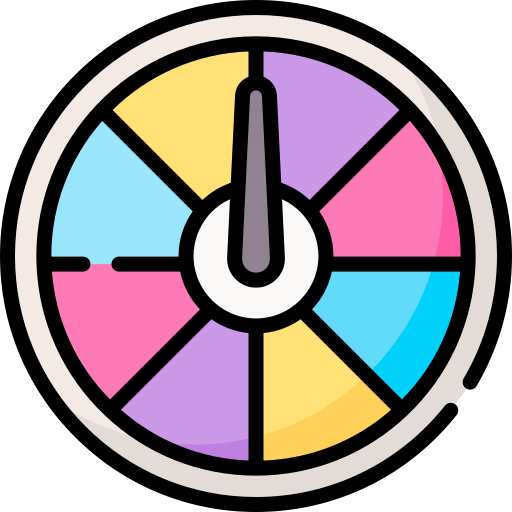

Ruleta numeros aleatorios 
Video explicativo
Paso a paso de la ruleta de números
Conectar los 4 pines del motor al controlador del motor: Esto implica conectar los cables que salen del motor a las salidas correspondientes en el controlador del motor paso a paso. Es importante asegurarse de seguir el esquema de conexión adecuado para garantizar un funcionamiento correcto.
Conectar el GND y los 5V del controlador del motor paso a paso a los GND y los 5V del Arduino: Aquí se establece una conexión entre el controlador del motor y la placa Arduino. Los cables que proporcionan tierra (GND) y alimentación (5V) desde el controlador del motor deben conectarse a los pines correspondientes en la placa Arduino.
Conectar los 4 pines restantes del controlador al Arduino en el puerto 8, 9, 10, 11: El controlador del motor paso a paso tiene cuatro pines adicionales que se utilizan para enviar señales de control desde la placa Arduino. Estas señales controlan el movimiento del motor. Debes conectar estos pines a los pines específicos en la placa Arduino, que en este caso son los puertos digitales 8, 9, 10 y 11.